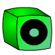
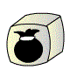

You should create a Javascript file called jQueryDiceARoo.js locally to this HTML file - all code should be in this file. Do not edit this HTML document.
Rules of the Game
The game is made up of 5 Levels, they are Red >> Blue >> Green >> Yellow >> Silver.
A dice is rolled on each level, where you will either win points, loose points, nothing happens, death (loose pot), or you proceed to the next level of dice.
As you proceed to each level of dice, the amount you can win or loose increases in value, up until Silver when you have the chance to win the Jackpot million points.
At any point, you can end the game and take away the points you currently hold. This will be entered as your high score amount and the game can restart.
Graphics
A folder called "dice" is provided with all the colour dices, below is a description for what each dice is for:
Lose a select amount of points from the pot. ./dice/color-lose.gif
Win a select amount of points for the pot. ./dice/color-win.gif

Nothing happens. ./dice/color-nothing.gif
A chance of advancing to the next level. ./dice/color-continue.gif
A chance of having the game end. ./dice/color-death.gif

Win the jackpot! (Only on the silver die.) ./dice/silver-jackpot.gif
Tasks
Task 1
When the button #roll is clicked, randomly change the #dice image to any of the 5 red dice.
Change #commentary to match the dice - for example "You won points!", "You lost points!", etc (Hint: Create an array of texts).
Task 2
If a "win" dice is selected, randomly generate a points value between 1 and 10 - in the #commentary text, say "Yay! You won x Points." replacing x with the value.
If a "lose" dice is selected, randomly generate a points value between 1 and 10 - in the #commentary text, say "Oops! You lost x Points." replacing x with the value.
Create a pot variable which automatically adds/deducts the appropriate number of points above - ensure the pot does not go lower than 0.
Change the #quit button value to show the current pot amount whenever this value changes.
Task 3
If a "continue" dice is selected, change the dice to the next colour level per the rules above. (IE: Red goes to Blue, etc).
When a "win" or "lose" dice is selected, ensure that highest value is double the previous level maximum, and the lowest amount is half that number. For example: 1 to 10, 10 to 20, 20 to 40, etc.
Task 4
When a "continue" dice is selected, add another 1/3 chance of allowing it to continue to the next level, and for the other 2/3 of the time #commentary should say "So close, but you can't continue just yet.." and stay on the same colour level.
When a "death" dice is selected, add a 1/2 chance of a death, if death, then reset the pot to 0, and change the next dice roll back to red and start again. Otherwise, allow the game to continue and #commentary say they almost died.
Task 5
When "jackpot" dice is selected, add a 1/5 chance, if successful, add a million points to the current pot and end the game.
When game ends by winning the jackpot, or by button click #quit, change #highscore p to reflect the latest highscore amount - if they quit on a lower pot value, ensure only the highest pot value is shown.
On game end ensure the pot is reset to 0, and the dice returns back to the first colour level red.
If quit is clicked, change the dice image to "red-nothing.gif" and display #commentary saying they've cashed in x points, replacing x with their total.
Task 6
Animate #commentary and #dice with a fade out and fade in animation effect on each roll. (Hint: w3schools.com)
Task 7
Store the current highscore to local storage (Hint: w3schools.com)
On page refresh, load the current highscore from local storage and ensure the #highscore p reflects the stored highscore.
Store and display the date/time the highscore was achieved. (Hint: FreeCodeCamp.org)
Useful Hints
It may be easier to create a key-value pair array for the dice types, ie: 0=>"lose",1=>"win" etc for randomly selecting each dice roll.
You can load images by using variables, such as $("#dice").attr("src","./dice/" + color + "-"+ type +".gif"); where color could be "red" and type could be any of the 5 types such as "lose"
You may wish to create your own random function such as randomNumber(low,high); which could then be used for both dice rolls, probability within those rolls, as well as points values for "win" and "lose".